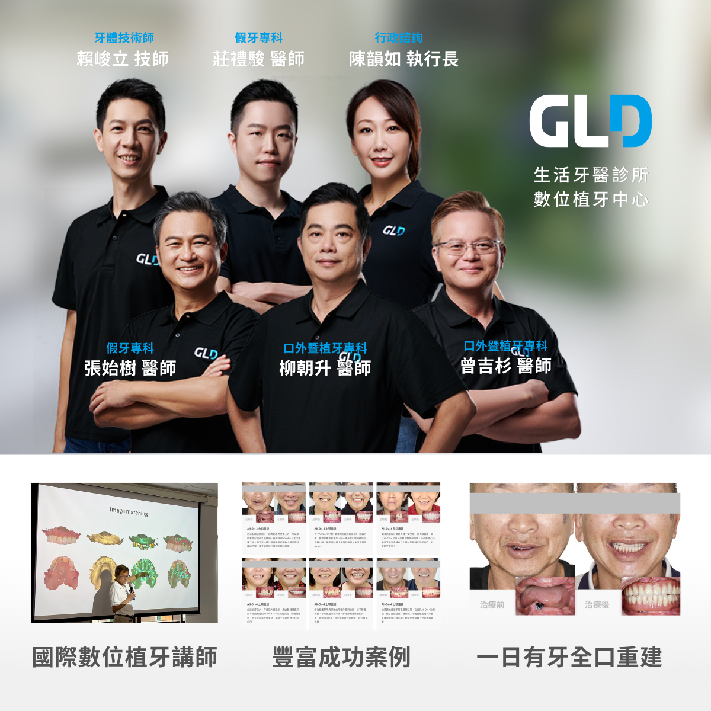
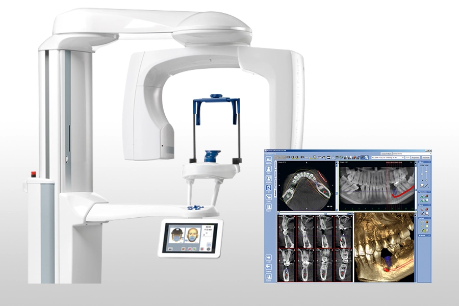
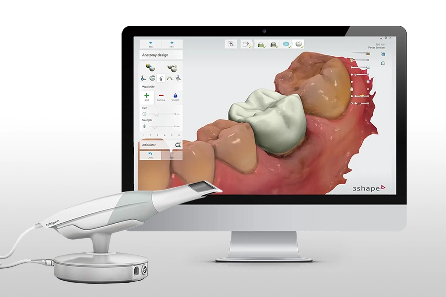
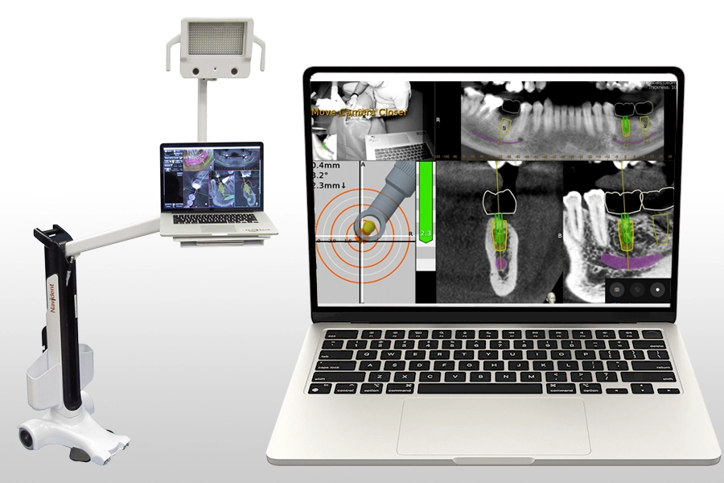
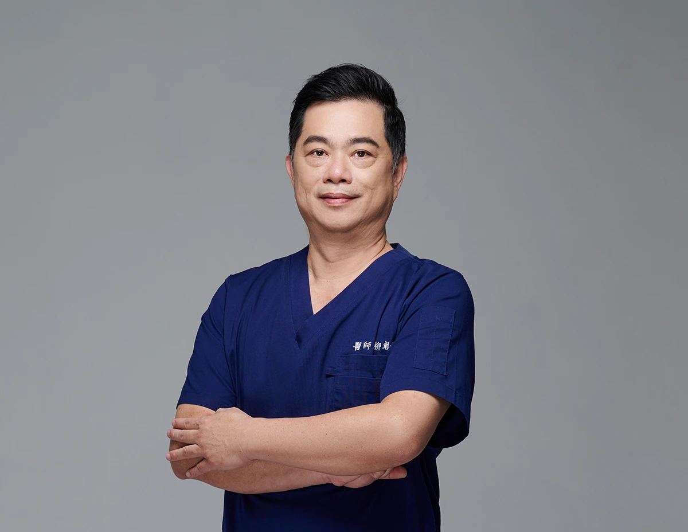
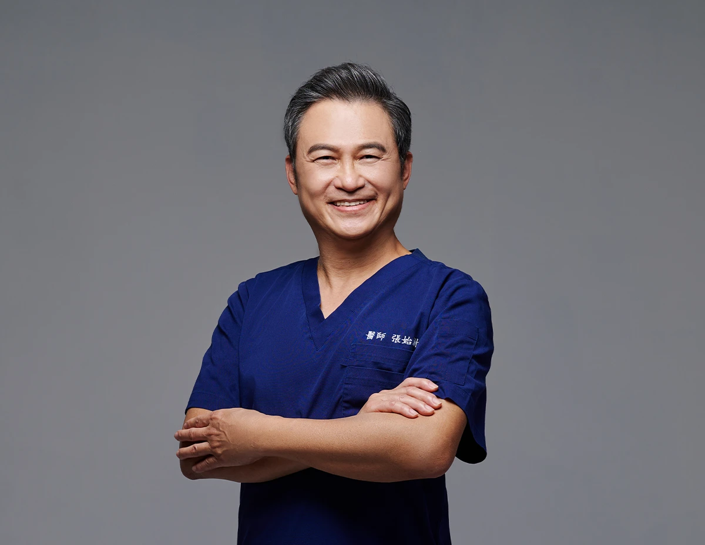
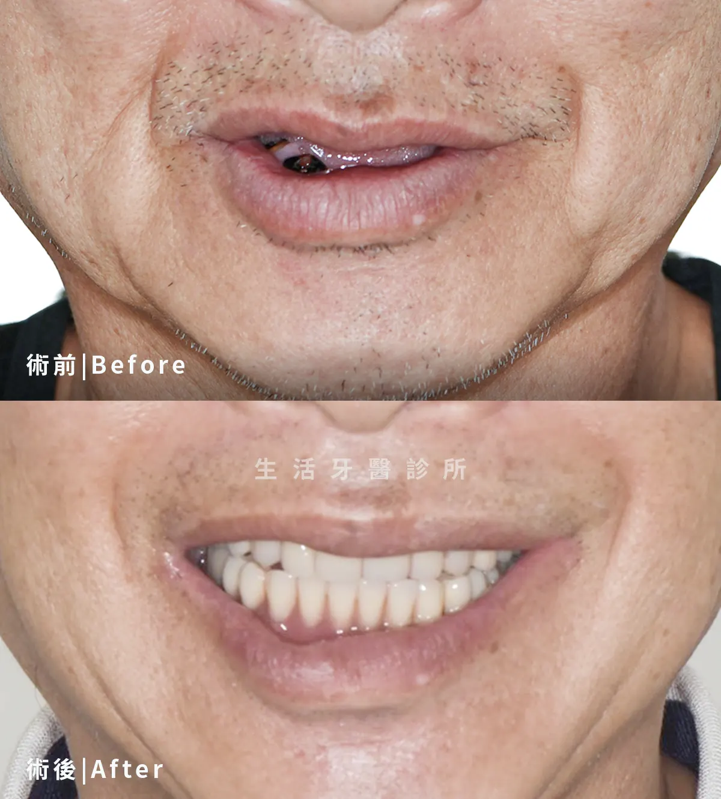
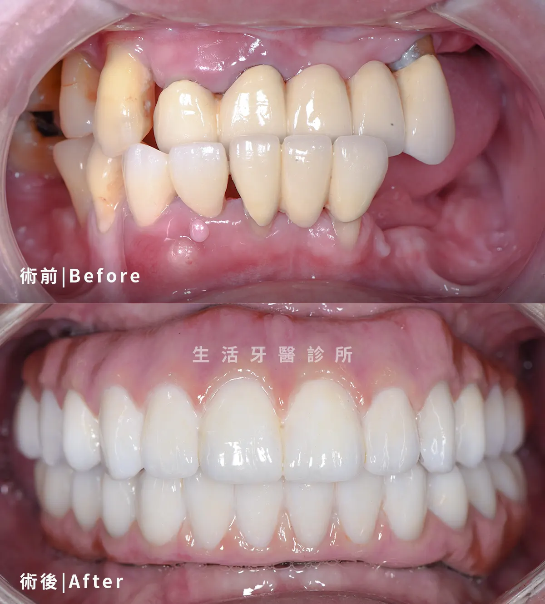
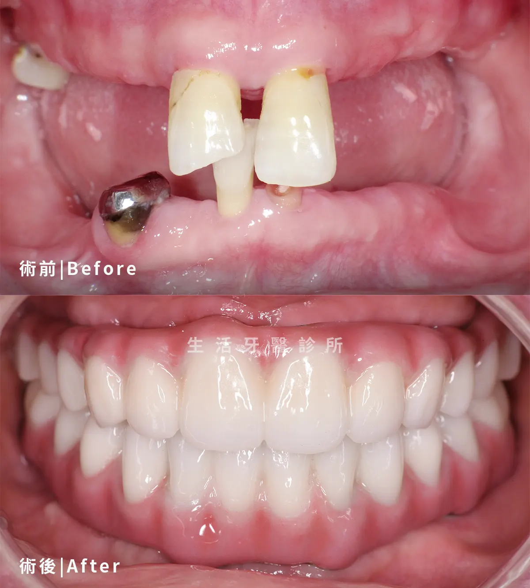

All-On-4／All-On-6
以少數植體支撐全口固定式假牙，整合手術、咬合與假牙設計。
整合專科醫師、數位影像與假牙設計，從初診評估、手術規劃到術後追蹤，以清楚而完整的流程陪伴每一位患者。

南投生活牙醫數位植牙中心具備國際數位植牙講師的卓越資格，匯聚口腔顎面外科、植牙與假牙贋復專科醫師，專精All-On-4一日全口重建與高難度複合式植牙。
我們以黃金三角專業陣容搭配醫學中心級高科技設備，秉持誠信不推銷誇大療程，為南投植牙患者量身打造精準舒適的治療計畫，成為在地滿意度最高的植牙首選。

依個別口腔條件與治療目標，規劃合適的植牙方式。
以少數植體支撐全口固定式假牙，整合手術、咬合與假牙設計。
針對嚴重骨缺損或全口重建需求，評估顴骨支撐植牙方案，提供更穩定的重建選擇。
術前製作詳盡的數位治療計畫並製作個人專屬導引版，手術時採導引式植牙，植牙手術快至10分鐘即可完成。
在條件合適時縮小手術範圍，降低植牙術區破壞，加速術後恢復、減少術後不適。
曾植牙失敗，植牙合併骨量不足、齒槽骨空間不足的附加手術，複合式植牙計畫挑戰其他醫師口中的不可能。
從諮詢到完成手術都由團隊一條龍完成，免除轉診的困擾與麻煩。
精心選用德國領導品牌大廠植體，並提供五年植體保固。
提前分析骨質、神經位置、植體角度與假牙空間，協助醫病溝通。
結合面部掃描、口腔掃描與影像資料，兼顧咬合與外觀比例。
依數位規劃製作導引板，輔助植體依預定角度與深度植入，精確又迅速。
可視需求搭配使用4D植牙動態導航儀，可提升植牙操作精準度至0.2mm。
不是只靠單一設備，而是讓影像、規劃、手術與假牙資料在流程中彼此對應。

立體檢視骨量、鼻竇與神經走向，作為植牙風險評估基礎。

快速記錄牙齒、牙齦與咬合，減少傳統印模的不適感。

將口腔資料放回臉部比例中評估，協助假牙外觀與支撐設計。

術中即時呈現方向與深度，輔助醫師精準操作，誤差值低於0.2mm。
由口腔外科、植牙與假牙重建醫師共同評估複雜案例。




以下案例皆採用 All-On-4 一日全口重建療程；每位患者的骨質、缺牙狀況與咬合條件不同，仍需由醫師完整評估。

透過少量植體支撐全口固定式假牙，重新建立完整牙列與咬合，改善長期缺牙造成的進食困擾。

依骨質條件與臉部比例規劃植體及假牙，兼顧牙齒排列、咬合高度與自然外觀。

整體評估齒槽骨、植體位置與受力方向，完成固定式全口重建，提升咀嚼時的穩定性。
不確定自己適合哪一種植牙方式，或想進一步了解數位植牙與全口重建，都可以先預約初診評估。生活牙醫會依照您的口腔條件安排合適醫師，讓療程規劃更清楚也更安心。